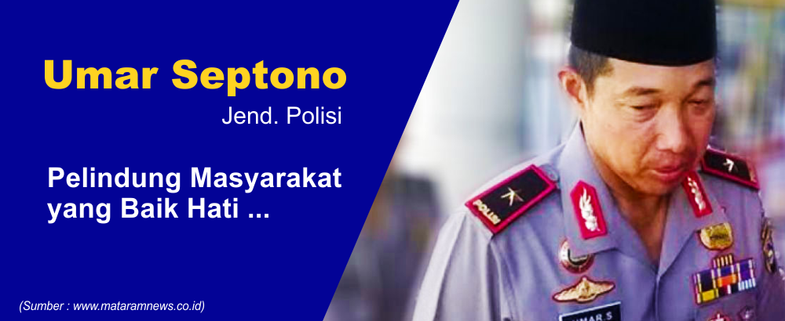
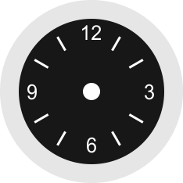

BRIGJEN UMAR SEPTONO: JENDRAL POLISI YANG RENDAH HATIDewasa ini, polisi banyak dikenal sangat ditakuti bukan mengayomi lagi. Namun, pernyataan itu tidak dibenarkan dengan banyaknya aksi-aksi polisi yang membuat kita terharu. Bukan semata-mata untuk memperlihatkan kebaikan. Namun, mereka memang menjalankan tugas dan amanahnya untuk melindungi, melayani dan mengayomi masyarakat. Salah satu cerita menginspirasi datang dari seorang Kapolda yang sangat bersahaja memimpin anak buahnya. Di suatu apel, Umar memanggil dua anak buahnya yang merupakan anggota Bhayangkara Pembina Keamanan dan Ketertiban Masyarakat (Bhabinkamtibmas) Polsek Praya Barat Daya, Nusa Tenggara Barat. Brigadir Ketut Surya Ningrat dan Brigadir Indra Jaya Kusuma dipanggil setelah beberapa hari lalu memberhentikan laju mobil dinas Umar. Ternyata alasan dari dua polisi tersebut adalah hendak membantu seorang nenek yang membawa kelapa menyebrang. Salah satu dari dua anggota polisi itu mengatakan mereka tidak takut dimarahi Umar selaku Kapolda. Mereka mengatakan bahwa mereka bekerja untuk masyarakat. Bukaannya marah karena merasa dipermalukan, Umar justru memberi tanda hormat kepada anak buahnya itu karena berani jujur kepadanya dan melakukan tugas yang baik dalam mengayomi masyarakat. Menurut Umar, mereka mempertanggungjawabkan tugasnya kepada Tuhan Yang Maha Esa. Tidak berhenti sampai disitu, Umar menghadirkan seorang tukang sapu pada saat apel Senin dan memberikan pelajaran bagi seluruh anggota polisi, bahwa jasa tukang sapu sangatlah berarti. Umar berkata bahwa di mata dunia mungkin tukang sapu adalah strata rendah. Tapi di mata Tuhan, tukang sapu mungkin saja lebih tinggi. Terakhir, adalah ketika Umar meminta tolong supirnya untuk memutara balik arah demi menolong warga yang kecelakaan. Tanpa basa-basi ketika sampai di tempat kejadian, Umar langsung turun dari mobil dan berlari menghampiri korban. Melihat salah satu korbannya adalah anak kecil yang terkapar, beliau langsung menggendong anak tersebut. Benar-benar bisa kita jadikan contoh. |


ANAK PETANI LULUS DENGAN IPK 3,98
|  | MORAL CHALLENGE? Yuk Mulai..!! |
#5 |
BELAJAR DISIPLINNegara maju didukung manusianya yang unggul dan disiplin. Untuk mewujudkan Indonesia maju, ayo kita belajar disiplin! Hal sederhana adalah disiplin waktu! |
Tentang Kami
Inspire The Moral (Spiral) merupakan website yang bertujuan untuk menginspirasi semua orang mulai dari yang muda sampai yang tua. Dan juga memberikan Moral Challenge untuk Melakukan aksi nyata yang bermoral dan memberi inspirasi serta teladan bagi banyak orang. Selengkapnya.. |
Ikuti Kami |